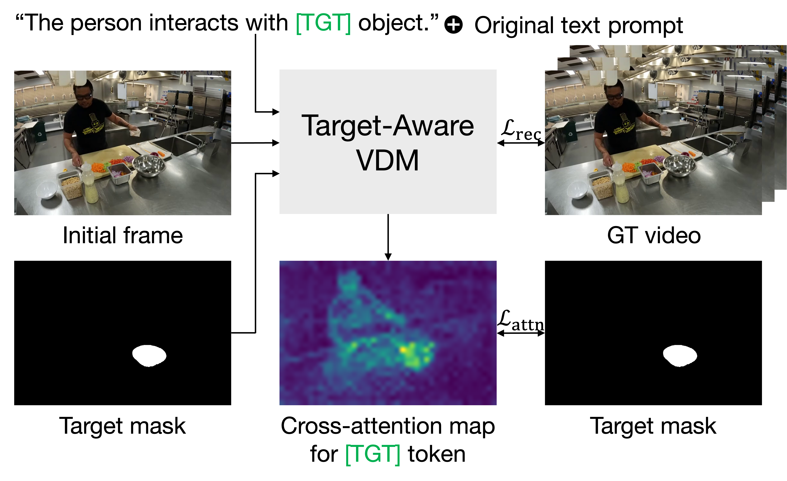

Method
1. We first extend a baseline video diffusion model to incorporate the mask as an additional input.
2. We introduce a [TGT] token that will be used to encode target’s spatial information in the text prompt.
3. We fine-tune the model using our cross-attention loss that aligns the cross-attention maps associated with this token with
the input target mask.

During inference, we prepend the [TGT] token to words referring to the target and enable the model to leverage the spatial cue provided by the mask. Our cross-attention loss effectively guides the [TGT] token to focus on the target region, enabling precise interactions between the actor and the target.